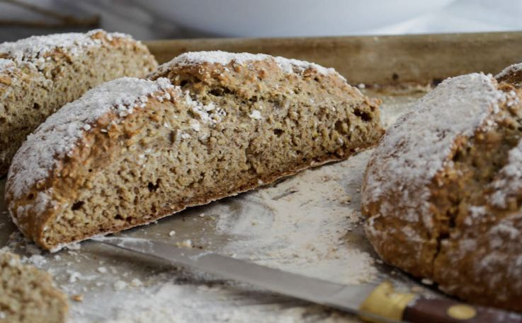

Pizzoccheri
Pasta corta di grano saraceno cotta con patate e verza, servita con formaggio fuso e burro.
Progetto studentesco – solo a scopo didattico · CZU Praga · non è un sito ufficiale di Livigno
Sapori locali
Livigno cucina nella tradizione della Valtellina: grano saraceno, formaggi di montagna e salumi. Assaggia i piatti, conosci i produttori locali e fai shopping duty-free.
Pasta corta di grano saraceno cotta con patate e verza, servita con formaggio fuso e burro.

Frittelle croccanti di pastella di grano saraceno con un cuore di formaggio morbido.

Manzo essiccato all'aria della Valtellina, tagliato sottile, spesso servito con limone e olio.
Rifugi
Cucina locale semplice sulle piste e lungo i sentieri.
Ristoranti tradizionali
Piatti valtellinesi come pizzoccheri e sciatt.
Pizzerie e caffè
Pasti veloci nel centro del paese.
Un elenco dei ristoranti con gli orari sarà caricato dai dati dell'ufficio turistico (previsto per il prossimo semestre).
Livigno è una zona extradoganale: sulla maggior parte delle merci non si paga l'IVA italiana. Per questo molti visitatori acquistano qui attrezzatura sportiva, profumi o cioccolato. Controlla i limiti doganali prima del rientro.

Latteria
Latte fresco, formaggi di montagna e yogurt della valle.

Miele ed erbe di montagna
Prodotti degli alpeggi d'alta quota.

Panetteria
Pane e dolci di grano saraceno e segale.